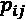
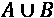
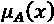
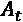
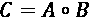
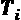
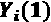
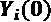
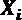

概率是对某件事情发生的可能性的度量。在销售预测中，对不确定性的估计是至关重要的，因为这些预测提供了对现金流、利润和收入的洞察，推动了取决于财务稳定性和员工生计的业务决策。这就是时间序列概率模型的用武之地。当对确定性的估计很重要时，它们帮助我们做决定。
在这一章中，我将介绍 Prophet、马尔可夫模型和模糊时间序列模型。最后，我们将使用这些方法进行一次应用练习。
概率建模的另一个应用是估计反事实，我们可以在实验中估计治疗效果。我们将讨论贝叶斯结构时间序列模型的概念，并且我们将在实践部分通过一个时间序列的实际例子来运行。
我们将讨论以下主题:
我们将从概率时间序列预测的介绍开始。
正如简介中提到的，概率模型可以帮助我们在不确定的情况下做出决策，在评估必须带有量化信心的情况下，例如在财务预测中，这可能是至关重要的。对于销售或现金流的预测，将概率附加到模型预测可以使财务总监和经理更容易根据新信息采取行动。
一些众所周知的算法包括 Prophet，明确设计用于监控运营指标和关键 绩效指标(KPI)，以及马尔可夫模型。其他还有随机深度学习模型如 DeepAR 和 DeepState 。由于我们是在第十章、深度学习模型中处理深度学习模型，所以在这一章就不详细处理了。
先知模型来自脸书(泰勒和勒撒姆，2017 年)，是基于一个具有可解释参数的可分解模型。一个指导性的设计原则是分析人员可以直观地调整参数。
Prophet 和我们在第 7 章、时序机器学习模型中介绍的 Silverkite 算法都旨在对可能具有变化趋势、季节性和重复事件(如假期)以及短期影响的时序进行准确预测，因此非常适合数据科学中的许多应用，这些应用的重点是资源规划、优化财务决策和跟踪运营分析进度等任务，这是运筹学的典型任务。
时间序列应用中特别感兴趣的其他类型的模型包括马尔可夫模型，我们将在专门的章节中讨论。
贝叶斯结构时间序列 ( BSTS )模型，我们在第 6 章、时间序列的无监督模型中提到的，允许量化单个成分的后验不确定性，控制成分的方差，并对模型施加先验信念。BSTS 模型是一种可用于特征选择、时间序列预测和推断因果关系的技术。最后一点，因果推理，是时间序列中概率模型的另一个用例。理解干预的影响可能很重要，例如，对于 A/B 测试。
图 9.1:时序概率建模库
您可以看到在这三个库中，pyFTS的级别高于其他两个。我还没有包括statsmodels库，它包括一些概率模型。我也没有包括先知。statsmodels和 Prophet 都将远远超过 HMMs(一个隐藏马尔可夫模型库)和 Pints(一个噪声时间序列库)。
我也没有包括神经网络或深度学习库，如 TensorFlow Probability 或 Gluon-TS。深度学习将是第十章、时间序列的深度学习的主题。
让我们从 Prophet 中的一个预测模型开始吧！
脸书的先知既是一个 Python/R 库，也是它附带的算法。该算法于 2017 年发表(“Sean Taylor 和 Benjamin Letham 的《规模化预测》)。作者写道，预测和异常检测在实践中的问题涉及在脸书处理各种具有分段趋势、多重季节性和浮动假期的特殊预测问题的复杂性，以及在整个组织中建立对这些预测的信任。
考虑到这些目标，Prophet 被设计为可扩展到许多时间序列，对于广泛的业务相关的、可能特殊的时间序列足够灵活，同时足够直观，可以由可能对时间序列方法知之甚少的领域专家进行配置。
Prophet 算法类似于广义加法模型 ( GAM )，它将趋势(增长)、季节性和假日这三个模型组件的预测之间的关系形式化，如下所示:
误差项ε代表模型不适应的剩余特质变化。所有函数都使用时间作为回归变量。这三种效应是相加的；然而，Sean Taylor 和 Benjamin Letham 建议通过对数变换可以实现倍增的季节性，其中季节效应是 g(t)的倍增因子。
对于饱和增长，趋势或增长函数可以是线性的或逻辑的。两者都可以通过变化点引入分段效果。季节性基于傅立叶级数对周期性影响进行建模。
Prophet 中的改变点选择是自动的。参数通过 Broyden–Fletcher–gold farb–Shanno(BFGS)算法进行优化，该算法在 Stan 统计建模平台中实施。
概率模型的优势在于为预测提供了一定程度的确定性；然而，他们的预测并不一定比非概率模型的预测更好。Prophet 相对于其他模型的基准测试结果喜忧参半。
在他们 2020 年的论文“销售预测概率时间序列模型的令人担忧的分析”中，Seungjae Jung 和其他人在大规模数据集上验证了概率时间序列模型。单变量时间序列由电子商务网站的每日销售额组成。
他们将两个深度学习概率模型 DeepAR 和 DeepState 以及 Prophet 与基线模型进行了比较，基线模型包括一个移动平均线 ( 马)、线性回归 ( LR )、一个多层感知器 ( MLP )和季节性 ARIMA ( 萨里马)。你应该记得从第五章、移动平均线和自回归模型中，MA 是前几天的简单未加权平均值。他们为 prophet 和所有基线模型尝试了 72 种不同的超参数。
他们发现，在均方根误差 ( RMSE )和平均绝对百分比误差 ( MAPE )方面，他们测试的概率模型未能胜过甚至最简单的基线模型，如 MLP 和 LR。总的来说，Prophet 在所有模型中表现最差。与往常一样，模型性能取决于数据集和手头的任务—没有灵丹妙药。
让我们看看马尔可夫模型是如何工作的！
马尔可夫性:在具有马尔可夫性的序列或随机过程中，每个事件的概率只取决于前一个状态(而不是更早的状态)。这些序列或过程也可以被称为马尔可夫或马尔可夫过程。
以俄罗斯数学家安德烈·马尔科夫的名字命名，马尔科夫性质是非常可取的，因为它大大降低了问题的复杂性。在预测中，不考虑所有以前的状态，t-1，t-2，…，0，只考虑 t-1。
类似地，马尔可夫假设，对于一个数学或机器学习模型是序列满足马尔可夫性质。在诸如马尔可夫链和隐马尔可夫模型的模型中，过程或序列被假设为马尔可夫过程。
在一个离散时间马尔可夫链 ( DTMC )中，序列(或链)在离散时间步的状态间转换。马尔可夫链也可以以连续的时间步长运行。这种不太常见的模型叫做连续时间马尔可夫链 ( CTMC )。
在隐马尔可夫模型 ( HMM )中，假设进程 X 遵循不可观测的状态 Y，其中是其行为取决于 X 的另一个进程。HMM 基于 X 对这个潜在的或隐藏的进程 Y 建模。
另一个马尔可夫型模型是非线性状态转换模型(也称为马尔可夫转换模型)。由詹姆斯·汉密尔顿于 1989 年发明的状态转换模型专门处理突然变化的情况，在这种情况下，更传统的线性模型将难以捕捉独特的行为。状态转换模型是一个自回归模型，其中过程的均值在状态之间转换。
对于实际的例子，我们将遵循一个statsmodels库实现并构建一个模型来复制 Hamilton 1989 年的模型。汉密尔顿模拟了 1951 年至 1984 年间实际国民生产总值(RGNP)的时间序列，RGNP 是对经济产出价值的宏观经济衡量，经价格变化调整。
我们将使用 4 阶马尔可夫切换模型，它可以写成如下形式:
对于每个状态(或周期),政权根据以下转移概率矩阵进行转移:
是从状态 I 过渡到状态 j 的概率
在这种情况下，我们正在模拟两种制度。
在下一节中，我们将讨论时间序列建模的模糊方法。
模糊逻辑和模糊集理论是由洛特菲·扎德在 20 世纪 60 年代和 70 年代担任加州大学柏克莱分校教授时开发的。出生在阿塞拜疆巴库的波斯和犹太裔俄罗斯父母，他在伊朗德黑兰完成学业，后来移居美国，在麻省理工学院和哥伦比亚大学学习。因此，他熟悉不同文化中的概念是如何理解的，以及如何用不同的语言表达。这启发了他对近似推理和语言变量的研究方法，他将其形式化为模糊理论。
模糊集理论是一种方法，可以处理与模糊、主观和不精确判断相关的问题。模糊性是日常语言中固有的，模糊性被发明出来以直观的方式表达和使用它。模糊逻辑表达主观信念和模糊性。可以并且已经声称概率论是模糊逻辑的一个子集。
模糊集是其元素具有隶属度的集合。在模糊逻辑中，单位区间[0，1]被用作推理规则的基础，而不是二进制(布尔)真值，真和假。更正式地，表达元素属于集合的确定度的隶属函数由隶属映射函数来表征:
例如，一个众所周知的算法，模糊 c 均值 (James Bezdek，1981)，基于 k 均值，返回聚类的隶属度。这意味着每个点可以属于每个聚类，但程度不同。这种模糊集成员关系与其他聚类算法通常返回的所谓的清晰划分形成对比，在清晰划分中，一个点要么是一个聚类的成员，要么不是。
对于模糊逻辑，所有的集合运算，如等式、子集和超集、并集和交集，都必须重新定义。两个模糊集(或关系)之间的并集被定义为每个点上的最大运算，而交集被定义为最小运算。更正式地说，两个集合 A 和 B 之间的并集被定义为:
其中是点 x 的隶属函数。
Song 和 Chissom (1993)提出了一个一阶、时不变的模糊时间序列模型来预测阿拉巴马大学的入学人数。这被形式化如下:
其中为 t 年入学人数， R 为模糊关系的并集，为模糊最大最小合成算子。
最大-最小合成运算、是通过逐项取 A 的第 I 行和 B 的第 j 列的最小值，并取这 n 个最小值中的最大值而得到的。
下图说明了这一点(来自维基百科的矩阵乘法页面):
图 9.2:最大最小合成运算符
标有圆圈的位置处的值计算如下:
在 Song 和 Chissom 的方法中，提取时间 t 的值和之前的值之间的关系，并将其结转用于预测。在他们的算法中，一个必要的预处理步骤是将时间序列 X 转换为模糊时间序列 y。这被称为模糊化，包括将一组实数值的输入限制为一个离散集合的模糊成员。这种量化可以通过矢量量化方法进行，例如 Kohonen 自组织映射(SOM)，这是一种无监督的机器学习方法，可以产生低维表示。
虽然模糊时间序列模型尚未得到广泛应用，但在某些应用中，它们已被证明比更传统的方法更具竞争力，如 SARIMA(例如，Maria Elena 等人，2012 年)。他们研究离散和连续的时间序列，并为预测生成可解释的模型。
在下一节中，我们将做一些概率时间序列预测的练习示例。
在因果推论中，我们要分析一种治疗的效果。处理可以是任何与我们关心的系统或环境交互的行为，从改变网站上按钮的颜色到发布产品。我们可以选择采取行动(例如，发布产品)，从而观察治疗的结果，或者不采取行动，观察不治疗的结果。如下图所示:
图 9.3:治疗的因果效应
在图中，采取或不采取行动(给病人用药)，根据是否采取行动，我们看到病人恢复(循环)或进入重症监护。
因果效应是在治疗和不治疗情况下发生的差异。这样做的问题是，我们无法同时观察到两种潜在的结果。
然而，我们可以运行一个实验来观察治疗下的潜在结果和不治疗下的潜在结果，例如在 A/B 测试中，治疗仅给予总人口的一个子集，并且治疗条件 B 可以与控制条件 A 进行比较。
我们可以将潜在的结果列表如下:
|
单位 |
治疗状况， |
治疗中的结果， |
不治疗的结果， |
反变， |
图 9.4:实验的潜在结果
在第一列单元中，我们看到了样本索引。每一行指的是人口中的一个单独的单位或样本。第二列(治疗状态)编码治疗是否实施(1)或不实施(0)。在第三列和第四列中，分别记录了接受治疗的结果和未接受治疗的结果。
标记显示的应该是显而易见的:当有治疗时，我们可以观察治疗的结果，但不能观察不治疗的结果。相反，当没有治疗时，我们可以观察不治疗的结果，但不能观察治疗的结果。
最后，在最后一篇专栏文章中，有一些额外的变量可以在我们的模型中对我们有所帮助，这些变量无论治疗与否都是可用的。
使用贝叶斯结构时间序列 ( BSTS )，重点是在没有实验的情况下估计治疗效果。我们可以估计或估算反事实，即实验中未知的潜在结果。这允许将治疗结果与未治疗结果进行比较，从而量化因果治疗效果。
该模型由三个主要部分组成:
卡尔曼滤波器用于时间序列分解。这允许对趋势、季节性和假日进行建模。在贝叶斯变量选择步骤中(尖峰厚片技术)，选择最重要的回归预测值。最后，在模型平均中，组合预测结果。
Steven L. Scott 和 Hal Varian 在论文"用贝叶斯结构时间序列预测现在"(2013 年)中描述了 BSTS 模型在变化点和异常检测中的应用。
2015 年，谷歌研究中心(Kay H. Brodersen、Fabian Gallusser、Jim Koehler、Nicolas Remy 和 Steven L. Scott)发表了一篇论文，概述了 BSTS 在估计干预的因果影响方面的应用。
这方面的数学细节超出了本章的范围。幸运的是，我们可以使用 Python 库来应用 BSTS 模型。我们将在这一章的练习部分浏览一个例子。
我们现在可以实践我们在本章中学到的一些理论。
让我们把到目前为止我们在本章中学到的东西付诸实践。我们将在 Prophet 中做一个模型，一个马尔可夫转换模型，一个模糊时间序列模型，和一个 BSTS 模型。
让我们从先知开始吧！
首先，让我们确保我们已经安装了所有需要的东西。让我们快速安装所需的库。我们可以从终端(或者类似地从 Anaconda navigator)实现这一点:
pip install -U pandas-datareader plotly
你需要一个最新版本的 pandas-datareader，否则你可能会得到一个RemoteDataError。
我们将通过脸书的先知图书馆使用先知模型。让我们安装它:
pip install prophet
一旦完成，我们就可以出发了。
在本例中，我们将使用本章中的雅虎每日收盘股票值，我们在第 7 章、时间序列的机器学习模型中的几个示例中使用了这些值。
概括地说，我们可以在 pandas-datareader 中下载 2001 年至 2021 年的雅虎每日股票历史，如下所示:
import pandas as pd
import numpy as np
from pandas_datareader.data import DataReader
from datetime import datetime
yahoo_data = DataReader('JPM', 'yahoo', datetime(2001,6,1), datetime(2021,6,1))
yahoo_df = yahoo_data['Adj Close'].to_frame().reset_index('Date')
这给了我们一个熊猫数据框架，有两列，调整后的每日收盘价和日期。让我们快速检查一下这两列的数据类型:
yahoo_df.dtypes
这些是数据类型:
Date datetime64[ns]
Adj Close float64
dtype: object
Date列是以纳秒为单位的日期时间。Adj Close属于浮点类型。
我们将把这个输入到fit()训练方法中:
from prophet import Prophet
forecaster = Prophet()
forecaster.fit(
yahoo_df.rename(columns={"Date": "ds", "Adj Close": "y"})
)
为了坚持先知惯例，我们不得不重命名我们的专栏ds和y。我们现在有一个训练有素的先知模型。
然后我们将创建一个具有未来日期的新数据帧。我们将能够把这个数据帧插入到 Prophet 模型的predict()方法中:
future = forecaster.make_future_dataframe(periods=90)
预测正在使用这个新的数据框架调用predict()方法:
forecast = forecaster.predict(future)
forecast数据框架包含预测的上下置信区间。ds栏是对应于预测的日期。
让我们根据实际数据绘制预测图:
forecaster.plot(forecast, figsize=(12, 6));
剧情是这样的:
图 9.5:预测与实际时间序列(Prophet)
你可能想把这个图和第 7 章、 中的时间序列的机器学习模型进行比较。实际数据粗加粗，而预测数据较细。上下置信区间都在预测左右。
我们可以通过查看数据框来检查预测:
图 9.6:预测表(Prophet)
获得第一个模型是相当容易的，并且有许多方法来调整它。
对于马尔可夫切换模型，我们将使用statsmodels库。如果还没有安装，可以这样安装:
pip install statsmodels
在这个例子中，我们将使用带有statsmodels的数据集。这是基于马尔可夫切换自回归模型的statsmodels教程。我们可以从 Stata 出版社的网站上获得数据集:
from statsmodels.tsa.regime_switching.tests.test_markov_autoregression import statsmodels.api as sm
import seaborn as sn
import pandas as pd
dta = pd.read_stata('https://www.stata-press.com/data/r14/rgnp.dta').iloc[1:]
dta.index = pd.DatetimeIndex(dta.date, freq='QS')
dta_hamilton = dta.rgnp
这给了我们一个 RGNP 的熊猫系列，索引标注了日期。让我们快速绘制一下:
dta_hamilton.plot(title='Growth rate of RGNP')
我们得到如下的情节:
图 9.7:RGNP 的增长率
我们将对国内衰退和扩张进行建模。该模型将包括这两种状态之间的转移概率，并预测每个时间点的扩张或衰退概率。
我们来拟合一下 4 阶马尔可夫切换模型。我们将指定两种制度:
import statsmodels.api as sm
mod_hamilton = sm.tsa.MarkovAutoregression(dta_hamilton, k_regimes=2, order=4, switching_ar=False)
res_hamilton = mod_hamilton.fit()
我们现在已经通过最大似然估计将模型拟合到 RGNP 数据。我们设置了switching_ar=False,因为statsmodels实现默认切换自回归系数。
让我们看看statsmodels车型总结:
print(res_hamilton.summary())
我们得到以下输出(被截断):
图 9.8:马尔可夫转换模型结果
我们可以看到，我们有两组参数，分别对应于两种状态。我们还得到统计模型质量的度量(如 AIC 和 BIC)。
在同一输出的底部，我们可以看到状态转换参数:
图 9.9:状态转换参数
这些是我们在马尔可夫转换模型的理论部分提到的状态转换。
让我们看看衰退和扩张的持续时间:
res_hamilton.expected_durations
产出array([ 4.07604793, 10.4258926 ])在财务季度。因此，衰退预计需要 4 个季度(1 年)，扩张需要 10 个季度(两年半)。
接下来，我们将绘制每个时间点的衰退概率。然而，如果我们叠加美国国家经济研究局(NBER)的衰退指标，这将提供更多信息，我们可以用 pandas-dataloader 加载这些指标:
from pandas_datareader.data import DataReader
from datetime import datetime
usrec = DataReader('USREC', 'fred', start=datetime(1947, 1, 1), end=datetime(2013, 4, 1))
这给了我们一个显示衰退的数据框架。以下是前五行:
图 9.10:NBER 的衰退指标
根据 NBER 指标，前五行没有出现衰退。
import matplotlib.pyplot as plt
_, ax = plt.subplots(1) ax.plot(res_hamilton.filtered_marginal_probabilities[0]) ax.fill_between(
usrec.index, 0, 1, where=usrec['USREC'].values,
color='gray', alpha=0.3
)
ax.set(
xlim=(dta_hamilton.index[4], dta_hamilton.index[-1]),
ylim=(0, 1),
title='Filtered probability of recession'
)
这给了我们相对于模型预测的实际衰退数据:
图 9.11:过滤后的衰退概率
我们可以看到，模型预测和实际衰退指标之间似乎相当吻合。
不幸的是，statsmodels实现没有提供预测或样本外预测的功能，所以我们将在这里结束简短的演示。
Statsmodels包括其他用于体制转换模型的数据集。
在接下来的练习部分，我们将使用巴西米纳斯吉拉斯联邦大学(UFMG)MINDS 实验室开发的pyFTS模糊时间序列库，将 Song 和 Chissom 的模型应用于时间序列预测问题。
在本节中，我们将加载两个股票代码的时间序列，即纳斯达克指数和标准普尔 500 指数，并使用 Song 和 Chissom 1993 年的算法对它们进行预测。这与库中的示例教程非常相似。
首先，我们将从终端(或者类似地从 Anaconda navigator)安装这个库:
pip install pyFTS SimpSOM
然后，我们将定义数据集:
from pyFTS.data import NASDAQ, SP500
datasets = {
"SP500": SP500.get_data()[11500:16000],
"NASDAQ": NASDAQ.get_data()
}
这两个数据集，即我们的datasets字典中的条目，都是大约 4000 个标量值的向量。我们将这些点的 50%用于训练，并且我们将它设置为一个常数:
train_split = 2000
该模型假设是一个平稳过程，因此我们需要通过时间差分对我们的时间序列进行预处理，如第 2 章、中讨论的利用时间序列进行探索性时间序列分析。
from pyFTS.common import Transformations
tdiff = Transformations.Differential(1)
让我们绘制我们的时间序列和转换:
import matplotlib.pyplot as plt
fig, ax = plt.subplots(nrows=2, ncols=2)
for count, (dataset_name, dataset) in enumerate(datasets.items()):
dataset_diff = tdiff.apply(dataset)
ax[0][count].plot(dataset)
ax[1][count].plot(dataset_diff)
ax[0][count].set_title(dataset_name)
原始时间序列和转换后的时间序列的图如下所示:
图 9.12:纳斯达克和标准普尔 500——原始和转换的时间序列
在 GitHub 库中，您可以看到应用于转换后的时间序列的增强 Dickey-Fuller 单位根测试。这个平稳性测试给我们开了绿灯，我们继续我们的模型。
下一步是为两个转换(差异)的时间序列训练我们的模型:
from pyFTS.models import song
from pyFTS.partitioners import Grid
models = {}
for count, (dataset_name, dataset) in enumerate(datasets.items()):
partitioner_diff = Grid.GridPartitioner(data=dataset, npart=15, transformation=tdiff)
model = song.ConventionalFTS(partitioner=partitioner_diff)
model.name = dataset_name
model.append_transformation(tdiff)
model.fit(
dataset[:train_split],
order=1
)
models[dataset_name] = model
我们对数据集进行迭代，并为每个数据集训练一个单独的模型，然后保存到字典models中。训练包括从训练集中提取关系。
作为模型训练的一部分，预处理的时间序列被量化，如本章模糊时间序列模型的理论部分所讨论的。
我们可以根据这两个模型绘制预测图:
_, ax = plt.subplots(nrows=2, ncols=1, figsize=[12, 6])
for count, (dataset_name, dataset) in enumerate(datasets.items()):
ax[count].plot(dataset[train_split:train_split+200])
model = models[dataset_name]
forecasts = model.predict(dataset[train_split:train_split+200], steps_ahead=1)
ax[count].plot(forecasts)
ax[count].set_title(dataset_name)
plt.tight_layout()
同样，我们在两个数据集上迭代。这一次，我们将测试集中的原始值(200 点)与提前一步预测的估计值进行对比。请注意，在预测过程中，模型不会根据新数据进行更新。
这是我们将预测值与测试集中的实际值进行比较的图表:
图 9.13:模糊时间序列预测与实际(标准普尔 500，纳斯达克)。
看着这些图表，预测看起来相当有希望，但让我们看看一些硬数字！
PyFTS有一个方便的函数来提取 RMSE，MAPE，最后，泰尔的 U，一个相关性的衡量标准。我们在第 2 章、用时间序列进行探索性时间序列分析中介绍了这些措施。
from pyFTS.benchmarks import Measures
rows = []
for count, (dataset_name, dataset) in enumerate(datasets.items()):
row = [dataset_name]
test = dataset[train_split:train_split+200]
model = models[dataset_name]
row.extend(Measures.get_point_statistics(test, model))
rows.append(row)
pd.DataFrame(
rows,columns=["Dataset", "RMSE", "MAPE", "Theil's U"]
).set_index("Dataset")
我们得到这些统计数据:
图 9.14:纳斯达克和标准普尔 500 的模糊时间序列建模的模型统计
我将把它作为一个练习留给读者来比较这两个模型和基于这些误差度量的其他模型。
在这个例子中，我们将应用 BSTS 模型来理解时间序列中治疗的因果关系。
首先，我们将安装库:
pip install tfcausalimpact
现在，我们将加载一个数据集，我们将估计治疗的后果。
在这里，我们将评估 2015 年 9 月大众汽车排放丑闻的影响。我们将研究大众、宝马和安联这三家大公司的股票价值。数据集附带了 Python 因果影响(tfcausalimpact)库:
import pandas as pd
from causalimpact import CausalImpact
data = pd.read_csv("https://raw.githubusercontent.com/WillianFuks/tfcausalimpact/master/tests/fixtures/volks_data.csv", header=0, sep=' ', index_col='Date', parse_dates=True)
现在我们有了股票价值。让我们画出它们:
data.plot()
以下是一段时间以来的股票情况:
图 9.15:三大公司(大众、宝马、安联)的股票价值
我们可以看到 2015 年末大众股票的价值大幅下跌。让我们试着找出排放丑闻的实际影响。我们可以这样构建我们的模型:
pre_period = [str(np.min(data.index.values)), "2015-09-13"]
post_period = ["2015-09-20", str(np.max(data.index.values))]
ci = CausalImpact(data.iloc[:, 0], pre_period, post_period, model_args={'nseasons': 52, 'fit_method': 'vi'})
print(ci.summary())
我们在这里看到这些数据:
Posterior Inference {Causal Impact}
Average Cumulative
Actual 126.91 10026.07
Prediction (s.d.) 171.28 (17.33) 13531.49 (1369.17)
95% CI [136.07, 204.01] [10749.78, 16116.83]
Absolute effect (s.d.) -44.37 (17.33) -3505.42 (1369.17)
95% CI [-77.1, -9.16] [-6090.76, -723.71]
Relative effect (s.d.) -25.91% (10.12%) -25.91% (10.12%)
95% CI [-45.01%, -5.35%] [-45.01%, -5.35%]
Posterior tail-area probability p: 0.01
Posterior probability of a causal effect: 99.2%
图 9.16:因果影响估计和模型统计
正如之前所讨论的，谷歌开发的因果影响模型通过将 BSTS 模型与观察到的数据进行拟合来工作，该模型随后用于预测在给定时间段内没有干预会产生什么结果。
总的估计影响约为 44 点——如果没有排放丑闻，股价会高出 44 点。影响总结报告为我们提供了以下分析(节选):
During the post-intervention period, the response variable had
an average value of approx. 126.91. By contrast, in the absence of an intervention, we would have expected an average response of 171.28. The 95% interval of this counterfactual prediction is [136.07, 204.01].
Subtracting this prediction from the observed response yields
an estimate of the causal effect the intervention had on the
response variable. This effect is -44.37 with a 95% interval of [-77.1, -9.16]. For a discussion of the significance of this effect, see below.
图 9.17:因果影响分析报告
这给了我们一个很好的模型估计的概念。
我们也可以绘制效果图:
ci.plot(panels=["original"]
剧情如下:
图 9.18:因果影响图
排放丑闻抹去了大众汽车的大量价值。这 44 分可以给我们一个货币价值，来衡量作弊排放测试让大众付出了多少代价。
在这一章中，我们已经讨论了时间序列的概率模型如何帮助我们在金融预测的背景下通过对不确定性的估计来做出决策。这些预测推动财务规划的业务决策。
我介绍了 Prophet、Markov 模型和模糊时间序列模型。我们已经讨论了脸书的先知模型的组成部分。对于马尔可夫模型，我们已经讨论了主要思想，例如马尔可夫属性，并且我们已经讨论了关于切换模型的更多细节。然后，我解释了模糊集理论的一些基础知识，以及如何应用于时间序列。
最后，我们在实验中评估治疗效果的背景下，深入研究了直觉和 BSTS 模型的一些理论。
最后，我们对每种方法进行了应用练习。在 BSTS 实践中，我们研究了大众汽车排放丑闻的影响。